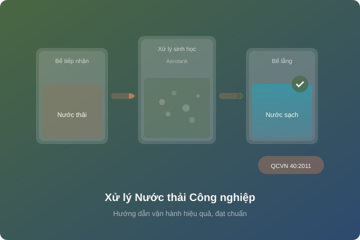

Hướng dẫn vận hành hệ thống xử lý nước thải công nghiệp hiệu quả
Hệ thống xử lý nước thải (XLNT) là yêu cầu bắt buộc đối với hầu hết cơ sở sản xuất công nghiệp. Tuy nhiên, việc đầu tư xây dựng hệ thống mới chỉ là bước đầu - vận hành đúng cách mới là yếu tố quyết định nước thải đầu ra có đạt quy chuẩn hay không.
1. Tổng quan về hệ thống XLNT công nghiệp
Hệ thống XLNT công nghiệp thường bao gồm các công đoạn chính:
Xử lý sơ bộ
Song chắn rác, bể lắng cát, bể điều hòaXử lý hóa lý
Keo tụ, tạo bông, tuyển nổi, trung hòa pHXử lý sinh học
Aerotank, MBBR, SBR, UASB, MBRXử lý bậc cao
Lọc áp lực, hấp phụ, khử trùng2. Các loại công nghệ XLNT phổ biến
a) Công nghệ sinh học hiếu khí (Aerotank, MBBR):
Sử dụng vi sinh vật hiếu khí phân hủy chất hữu cơ trong điều kiện có oxy. Phù hợp với nước thải có BOD/COD cao như chế biến thực phẩm, thủy sản, dệt nhuộm.
b) Công nghệ sinh học kỵ khí (UASB, IC):
Vi sinh vật kỵ khí phân hủy chất hữu cơ trong điều kiện không có oxy, sinh ra biogas. Hiệu quả với nước thải có tải lượng hữu cơ rất cao (COD > 3.000 mg/L).
c) Công nghệ màng (MBR):
Kết hợp xử lý sinh học và lọc màng, cho nước đầu ra chất lượng cao. Chi phí đầu tư cao hơn nhưng tiết kiệm diện tích và cho nước thải đầu ra ổn định.
3. Quy trình vận hành hàng ngày
Buổi sáng (7:30 - 8:00):
- Kiểm tra tổng quan hệ thống, mức nước các bể
- Vệ sinh song chắn rác, thu gom rác thải
- Kiểm tra hoạt động máy bơm, máy thổi khí
- Đo pH, DO tại các bể chính
Trong ngày (8:00 - 16:00):
- Giám sát lưu lượng nước thải đầu vào
- Điều chỉnh hóa chất keo tụ, dinh dưỡng vi sinh
- Kiểm tra bùn lắng (SV30) trong bể Aerotank
- Xả bùn dư, bơm tuần hoàn bùn
Cuối ngày (16:00 - 17:00):
- Lấy mẫu nước đầu ra kiểm tra nhanh
- Ghi nhật ký vận hành
- Kiểm tra lại thiết bị trước khi kết thúc ca
4. Các thông số cần kiểm soát
| Thông số | Vị trí đo | Giá trị tối ưu | Tần suất |
|---|---|---|---|
| pH | Đầu vào, bể sinh học, đầu ra | 6.5 - 8.5 | 2 lần/ngày |
| DO (Oxy hòa tan) | Bể Aerotank | 2 - 4 mg/L | 2 lần/ngày |
| SV30 (Bùn lắng) | Bể Aerotank | 200 - 400 mL/L | 1 lần/ngày |
| MLSS | Bể Aerotank | 2.500 - 4.000 mg/L | 1 lần/tuần |
| BOD₅, COD, TSS | Đầu ra | Theo QCVN 40 | Theo GPMT |
5. QCVN 40:2011/BTNMT - Tiêu chuẩn xả thải
QCVN 40:2011/BTNMT quy định giá trị giới hạn các thông số ô nhiễm trong nước thải công nghiệp khi xả ra nguồn tiếp nhận:
- Cột A: Xả vào nguồn nước dùng cho mục đích cấp nước sinh hoạt (BOD₅ ≤ 30 mg/L, COD ≤ 75 mg/L)
- Cột B: Xả vào nguồn nước không dùng cho sinh hoạt (BOD₅ ≤ 50 mg/L, COD ≤ 150 mg/L)
6. Sự cố thường gặp và cách xử lý
Nguyên nhân: Thiếu dinh dưỡng (N, P), DO thấp, quá tải hữu cơ.
Xử lý: Bổ sung dinh dưỡng, tăng sục khí, giảm tải đầu vào.
Nguyên nhân: Nước thải đầu vào thay đổi đột ngột, hệ thống trung hòa trục trặc.
Xử lý: Kiểm tra bể điều hòa, điều chỉnh hóa chất trung hòa.
Nguyên nhân: Vi sinh chết, quá tải, thiết bị hỏng.
Xử lý: Bổ sung vi sinh, giảm tải, kiểm tra máy thổi khí.
Nguyên nhân: Bể kỵ khí quá tải, bùn tích tụ lâu ngày.
Xử lý: Hút bùn, tăng sục khí, bổ sung chế phẩm khử mùi.
7. Bảo trì bảo dưỡng định kỳ
- Hàng ngày: Vệ sinh song chắn rác, kiểm tra bơm, ghi nhật ký
- Hàng tuần: Kiểm tra đĩa/ống phân phối khí, bảo dưỡng van, đường ống
- Hàng tháng: Bảo dưỡng máy bơm, motor, kiểm tra dầu mỡ bôi trơn
- Hàng quý: Kiểm tra toàn bộ hệ thống điện, tủ điều khiển
- Hàng năm: Đại tu thiết bị chính, nạo vét bùn bể lắng, thay màng MBR (nếu có)
8. Chi phí vận hành và cách tối ưu
Chi phí vận hành hệ thống XLNT bao gồm: điện năng (40-50%), hóa chất (25-30%), nhân công (15-20%), bảo trì (5-10%). Cách tối ưu:
- Lắp biến tần cho máy bơm, máy thổi khí để tiết kiệm điện
- Tối ưu liều lượng hóa chất bằng jar test định kỳ
- Đào tạo nhân viên vận hành bài bản, giảm sự cố
- Xem xét tái sử dụng nước thải sau xử lý cho tưới cây, rửa sàn
Cần tư vấn về hệ thống XLNT?
NC Environment cung cấp dịch vụ tư vấn thiết kế, lắp đặt và vận hành hệ thống xử lý nước thải cho mọi quy mô doanh nghiệp.
Hotline: 0975 873 866 | Email: letuantran@gmail.com
Nhận Tư Vấn Miễn Phí